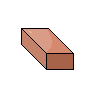

<ion-header [translucent]="true">
  <ion-grid>
    <ion-row>
      <ion-col size="0.6">
        <ion-button class="backbutton" [routerLink]="['../ciudad']">
          <ion-icon name="chevron-back-outline"></ion-icon>
        </ion-button>
      </ion-col>
      <ion-col size="1">
        
      </ion-col>
      <ion-col>
        <ion-row>
          <ion-label class="ion-text-lg">Barrera (Nivel X)</ion-label>
        </ion-row>
        <ion-row>
          <ion-label class="ion-text-md">Los excavadores recogen el barro que luego se utiliza para crear ladrillos</ion-label>
        </ion-row>
      </ion-col>
    </ion-row>
  </ion-grid>
</ion-header>

<ion-content>
<ion-grid>
  <ion-row>
    <ion-col class="dark-brown" size="0.7"><ion-label>Recurso</ion-label></ion-col>
    <ion-col class="dark-brown" size="1.3"><ion-label>Producción por hora</ion-label></ion-col>
  </ion-row>
  <ion-row>
    <ion-col class="light-brown" size="0.7"></ion-col>
    <ion-col class="light-brown" size="1.3">
      <ion-label>23000</ion-label>
    </ion-col>
  </ion-row>

  
</ion-grid>
</ion-content>